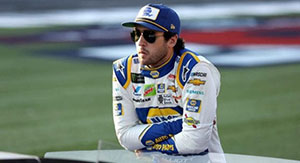

- 
-
Chase Elliott
Chase Elliott is a professional NASCAR Driver with 4 years of experience in NASCAR's premier series, the Cup Series. He is one of the rising stars in NASCAR with a bright future.

Chase Elliott is a professional NASCAR Driver with 4 years of experience in NASCAR's premier series, the Cup Series. He is one of the rising stars in NASCAR with a bright future.